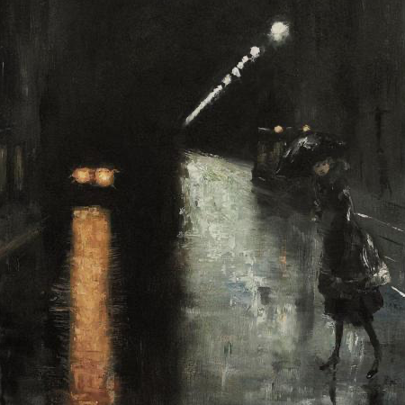

3 November 2025
a city without witness

dear you,
the city hums.
it’s a low, constant pulse:
a heart that doesn’t know how to rest.
no one is waiting for me.
so beneath its rhythm, i walk.
the air is heavy with summer’s aftertaste,
warm and a little tired.
the pavement remembers the day,
and each step sounds softer
as if the world has agreed
to speak in whispers.
every shadow belongs to something real,
but in this light
none of it feels urgent.
the world exists
without asking me to name it.
the mind loosens with distance,
thoughts fall into step.
what felt heavy indoors
becomes a little lighter here.
i walk without purpose.
not trying to arrive in any one place,
belonging for a while,
to this moment that wants nothing from me.
when i turn homeward,
the city does not notice.
and somehow, that feels right.
tonight, i have spoken to no one,
yet something in me has settled.
yours, kate
(artwork: nächtliche straßenszene, berlin by lesser ury)